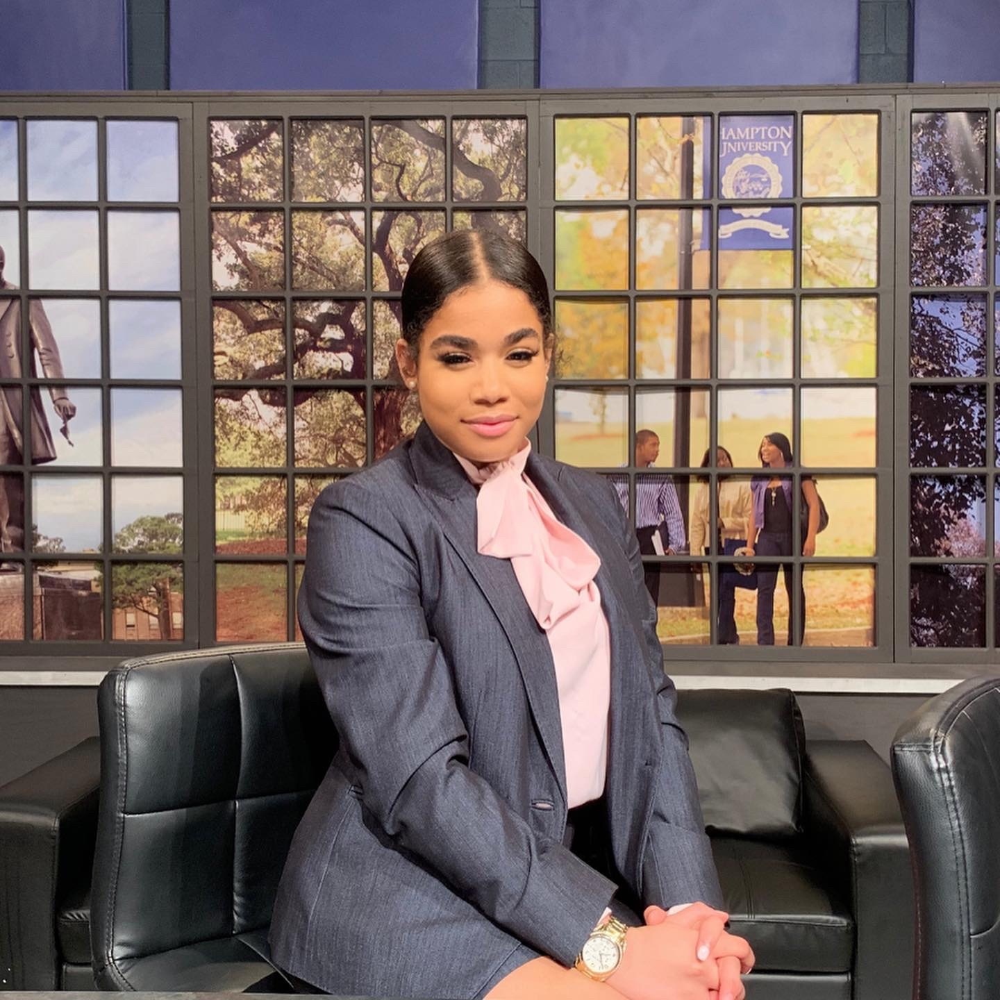

Junior Broadcasting Journalism Major

This is a mission statement.
Community Ambassador
Terrapin Row
February 2021 - present
- Serving as a liaison with Terrapin Row's leasing and marketing team by establishing sustainable relationships with prospective residents and the residential community. Maintaining and creating a vibrant community to increase resident satisfaction and retention is imperative within my role. My role consists of programming (initiating social and developmental activities), one-on-one contact, proactive problem-solving, and providing an overall focus for the well-being of our residents
Freelance Journalist
College Park Here & Now
December 2021 - present
- Wrote and covered pertinent events that encompassed College Park and University news by freelancing as a reporter and journalist
Freelance Journalist
Stories Beneath the Shell
November 2021 - December 2021
- Worked as a freelance reporter and writer for Stories Beneath the Shell; wrote and covered campus wide events for the University of Maryland's news service
Freelance Journalist
The Diamondback
November 2021 - present
- Worked as a freelance reporter and writer for the independent student newspaper. Covering topics such as student events and trending campus news is the theme for my feature stories and news articles
Beat Reporter
Hyattsville Life and Times
December 2021 - December 2021
- Covered and reported holiday events during the winter season, to keep College Park residents in the know about seasonal activities
Fitness Coordinator-Instructor
Ninjabe
May 2018 ‐ Dec 2020
- Indoor obstacle course that puts adults and children to the task by completing obstacles and overcoming challenges. I Party planned for birthday parties and Ninja Be events; Developed arduous activities and obstacles that children overcame; and involved lessons about “Growth Mindset” to help the children believe that they can achieve anything by setting goals and tracked attendance and participation-performance data related to fitness and wellness events
Sales Clerk and Client Consultant
Success In Style “Charity’s Closet”
February 2015 - February 2018
- Provided administrative tasks through one-on-one comprehensive fashion consultations, sorted, and retailed clothes for clients. Uplifting individuals in crisis while helping them show off their best, most professional selves was crucial for our clients, especially for those who did not have the financial means to do so on their own. With the collaborative efforts from the non-profit charitable organization; promoting high quality professional clothing for interviews and employment was a sustainable mission
- Junior Broadcasting Journalism Major,attending the University of Maryland
- Hampton University
- The Catholic Highschool of Baltimore
- Currently studying coding, multimedia journalism, media law, and data journalism
- Proficient in Adobe Premiere Pro; Interactive Design and Development using HTML and CSS; Adobe XD; data entry; and Mac OS and Windows
- Reporting: News reporting and writing, basic news videography, journalism law and ethics, basic photography, broadcast news writing, and orchestrating interviews for broadcast media
- Passion for public speaking
- Detail oriented
- Ability to work in harmony with others
- Imaginative and ingenious
- Leadership
- Problem solver Communicates succinctly and effectively
- Personable